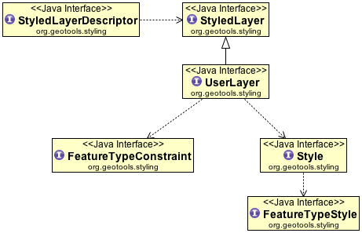
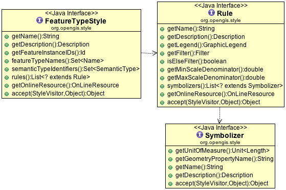
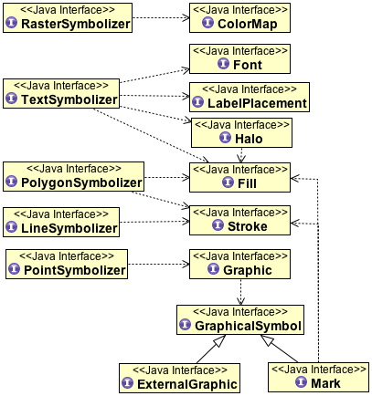
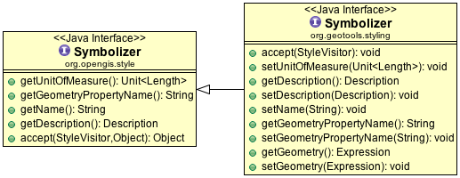

Styling features for display¶
GeoTools Rendering process is controlled styling information that you provide. The data structures we use to describe styling are based on the Style Layer Descriptor (SLD) and Symbology Encoding (SE) specifications provided by the OGC. The SLD specification defines an XML document you can use to save and load your styles.
This page is devoted to examples, to review the concepts consult the references below.
References:
- gt-api style layer descriptor (interfaces)
- gt-opengis symbology encoding (interfaces)
- http://www.opengeospatial.org/standards/sld (style layer descriptor)
- http://www.opengeospatial.org/standards/symbol (symbology encoding)
StyleFactory¶
We have three style factories offering various levels of standards compliance vs pragmatism.
| Module | Class | Capability | Scope | Description |
|---|---|---|---|---|
| gt-opengis | StyleFactory | get | se | Strictly limited to the SE standard |
| gt-api | StyleFactory | get/set | se / sld | Supports GeoTools vendor extensions |
| gt-api | StyleFactory2 | get/set | se / sld | Supports text label graphics |
| gt-main | StyleBuilder | get/set/defaults | se / sld | Shorter methods, does not do everything |
Here are some examples of these classes in action:
StyleFactory
The gt-opengis StyleFactory allows you to create read-only instances.
Here is a quick example showing the creation of a PointSymbolizer:
// org.opengis.style.StyleFactory sf = CommonFactoryFinder.getStyleFactory(); FilterFactory2 ff = CommonFactoryFinder.getFilterFactory2(); // // create the graphical mark used to represent a city Stroke stroke = sf.stroke(ff.literal("#000000"), null, null, null, null, null, null); Fill fill = sf.fill(null, ff.literal(Color.BLUE), ff.literal(1.0)); // OnLineResource implemented by gt-metadata - so no factory! OnLineResourceImpl svg = new OnLineResourceImpl(new URI("file:city.svg")); svg.freeze(); // freeze to prevent modification at runtime OnLineResourceImpl png = new OnLineResourceImpl(new URI("file:city.png")); png.freeze(); // freeze to prevent modification at runtime // // List of symbols is considered in order with the rendering engine choosing // the first one it can handle. Allowing for svg, png, mark order List<GraphicalSymbol> symbols = new ArrayList<GraphicalSymbol>(); symbols.add(sf.externalGraphic(svg, "svg", null)); // svg preferred symbols.add(sf.externalGraphic(png, "png", null)); // png preferred symbols.add(sf.mark(ff.literal("circle"), fill, stroke)); // simple circle backup plan Expression opacity = null; // use default Expression size = ff.literal(10); Expression rotation = null; // use default AnchorPoint anchor = null; // use default Displacement displacement = null; // use default // define a point symbolizer of a small circle Graphic circle = sf.graphic(symbols, opacity, size, rotation, anchor, displacement); PointSymbolizer pointSymbolizer = sf.pointSymbolizer("point", ff.property("the_geom"), null, null, circle);
StyleFactory2
This gt-api interface allows one additional non standard trick; it allows us to place an icon behind text labels. This is a popular technique used for example to place a “label shield” behind hi-way signs.
StyleFactory
This gt-api interface allows access to all the GeoTools vendor specific options.
It has a slightly different style of programming where mutable instances are creating allowing you to call both get and set methods.
You are of course not advised to udpate a style while it is being used to draw.
// // We are using the GeoTools styleFactory that allows access to get/set methods org.geotools.styling.StyleFactory sf = CommonFactoryFinder.getStyleFactory(); FilterFactory2 ff = CommonFactoryFinder.getFilterFactory2(); StyledLayerDescriptor sld = sf.createStyledLayerDescriptor(); sld.setName("sld"); sld.setTitle("Example"); sld.setAbstract("Example Style Layer Descriptor"); UserLayer layer = sf.createUserLayer(); layer.setName("layer"); // // define constraint limited what features the sld applies to FeatureTypeConstraint constraint = sf.createFeatureTypeConstraint("Feature", Filter.INCLUDE, null); layer.layerFeatureConstraints().add(constraint); // // create a "user defined" style Style style = sf.createStyle(); style.setName("style"); style.getDescription().setTitle("User Style"); style.getDescription().setAbstract("Definition of Style"); // // define feature type styles used to actually define how features are rendered FeatureTypeStyle featureTypeStyle = sf.createFeatureTypeStyle(); // RULE 1 // first rule to draw cities Rule rule1 = sf.createRule(); rule1.setName("rule1"); rule1.getDescription().setTitle("City"); rule1.getDescription().setAbstract("Rule for drawing cities"); rule1.setFilter(ff.less(ff.property("POPULATION"), ff.literal(50000))); // // create the graphical mark used to represent a city Stroke stroke = sf.stroke(ff.literal("#000000"), null, null, null, null, null, null); Fill fill = sf.fill(null, ff.literal(Color.BLUE), ff.literal(1.0)); // OnLineResource implemented by gt-metadata - so no factory! OnLineResourceImpl svg = new OnLineResourceImpl(new URI("file:city.svg")); svg.freeze(); // freeze to prevent modification at runtime OnLineResourceImpl png = new OnLineResourceImpl(new URI("file:city.png")); png.freeze(); // freeze to prevent modification at runtime // // List of symbols is considered in order with the rendering engine choosing // the first one it can handle. Allowing for svg, png, mark order List<GraphicalSymbol> symbols = new ArrayList<GraphicalSymbol>(); symbols.add(sf.externalGraphic(svg, "svg", null)); // svg preferred symbols.add(sf.externalGraphic(png, "png", null)); // png preferred symbols.add(sf.mark(ff.literal("circle"), fill, stroke)); // simple circle backup plan Expression opacity = null; // use default Expression size = ff.literal(10); Expression rotation = null; // use default AnchorPoint anchor = null; // use default Displacement displacement = null; // use default // define a point symbolizer of a small circle Graphic city = sf.graphic(symbols, opacity, size, rotation, anchor, displacement); PointSymbolizer pointSymbolizer = sf.pointSymbolizer("point", ff.property("the_geom"), null, null, city); rule1.symbolizers().add(pointSymbolizer); featureTypeStyle.rules().add(rule1); // // RULE 2 Default List<GraphicalSymbol> dotSymbols = new ArrayList<GraphicalSymbol>(); dotSymbols.add(sf.mark(ff.literal("circle"), null, null)); Graphic dotGraphic = sf.graphic(dotSymbols, null, ff.literal(3), null, null, null); PointSymbolizer dotSymbolizer = sf.pointSymbolizer("dot", null, null, null, dotGraphic); List<org.opengis.style.Symbolizer> symbolizers = new ArrayList<org.opengis.style.Symbolizer>(); symbolizers.add(dotSymbolizer); Filter other = null; // null will mark this rule as "other" accepting all remaining features Rule rule2 = sf.rule("default", null, null, Double.MIN_VALUE, Double.MAX_VALUE, symbolizers, other); featureTypeStyle.rules().add(rule2); style.featureTypeStyles().add(featureTypeStyle); layer.userStyles().add(style); sld.layers().add(layer);
StyleBuilder
Since a Style is composed of a complex set of objects, a StyleBuilder object is provided for you to conveniently build simple styles without the need to build all of the style elements by hand.
For example, you can create a PolygonSymbolizer and then create a Style out of it with a single method call: the builder will generate a default FeatureTypeStyle and the Rule for you.
// // We are using the GeoTools StyleBuilder that is helpful for quickly making things StyleBuilder builder = new StyleBuilder(); FilterFactory2 ff = builder.getFilterFactory(); // RULE 1 // first rule to draw cities // define a point symbolizer representing a city Graphic city = builder.createGraphic(); city.setSize(ff.literal(10)); city.graphicalSymbols().add(builder.createExternalGraphic("file:city.svg", "svg")); // svg // preferred city.graphicalSymbols().add(builder.createExternalGraphic("file:city.png", "png")); // png next city.graphicalSymbols().add( builder.createMark(StyleBuilder.MARK_CIRCLE, Color.BLUE, Color.BLACK, 1)); PointSymbolizer pointSymbolizer = builder.createPointSymbolizer(city, "the_geom"); Rule rule1 = builder.createRule(pointSymbolizer); rule1.setName("rule1"); rule1.getDescription().setTitle("City"); rule1.getDescription().setAbstract("Rule for drawing cities"); rule1.setFilter(ff.less(ff.property("POPULATION"), ff.literal(50000))); // // RULE 2 Default Graphic dotGraphic = builder.createGraphic(null, builder.createMark(StyleBuilder.MARK_CIRCLE), null); PointSymbolizer dotSymbolize = builder.createPointSymbolizer(dotGraphic); Rule rule2 = builder.createRule(dotSymbolize); rule2.setIsElseFilter(true); // // define feature type styles used to actually define how features are rendered Rule rules[] = new Rule[] { rule1, rule2 }; FeatureTypeStyle featureTypeStyle = builder.createFeatureTypeStyle("Feature", rules); // // create a "user defined" style Style style = builder.createStyle(); style.setName("style"); style.getDescription().setTitle("User Style"); style.getDescription().setAbstract("Definition of Style"); style.featureTypeStyles().add(featureTypeStyle);
StlyeBuilder also helps by filling in many defaults values. The use of defaults is less of an issue now as the rendering system is able to correctly handle null as a default for many cases such as default symbol size.
What to use
For working with symbology encoding StyleFactory is recommended as it defines a small number of easy to use methods. There are however no helpful methods and shortcuts but you have the advantage of less methods to trip over). Since everything is in plain sight you may discover some tricky advanced abilities that may not obvious using StyleBuilder.
For working with style layer descriptor use StyleBuilder to quickly create objects with their default values filled in; and then configure them as needed using setters.
Internally we have:
- StyleFactoryImpl2 that creates the raw objects; this is an implementation of the simple gt-opengis StyleFactory.
- StyleFactoryImpl makes use of a aelegate to create the objects; and then allows for a wider range of create methods defined by gt-api StyleFactory
- StyleBuilder which as expected uses a FilterFactory and a StyleFactory in order to get the job done.
Style Layer Descriptor¶
GeoTools styling is built on the style layer descriptor data model shown below (from gt-api).
GeoTools rendering tends to focus the “User Style” which we represent Style to let you control how your Map is rendered.
Style
The Style interface matches up with the “Style Layer Descriptor” 1.0 specification (so if you need explanations or examples please review the OGC documentation for more information).
Create¶
To create a StyleLayerDescriptor object using a StyleFactory:
StyleFactory styleFactory = CommonFactoryFinder.getStyleFactory();
StyledLayerDescriptor sld = styleFactory.createStyledLayerDescriptor();
sld.setName("example");
sld.setAbstract("Example Style Layer Descriptor");
UserLayer layer = styleFactory.createUserLayer();
layer.setName("layer");
FeatureTypeConstraint constraint = styleFactory.createFeatureTypeConstraint("Feature",
Filter.INCLUDE, null);
layer.layerFeatureConstraints().add(constraint);
Style style = styleFactory.createStyle();
style.getDescription().setTitle("Style");
style.getDescription().setAbstract("Definition of Style");
// define feature type styles used to actually
// define how features are rendered
//
layer.userStyles().add(style);
sld.layers().add(layer);
This is the last time we will talk about StyleLayerDescriptor object - it is not really that useful in controlling the rendering process.
Access¶
To go from a StyleLayerDescriptor object to something useful:
FeatureTypeStyle useful[] = SLD.featureTypeStyles( sld );
Or find a style that is compatible with your feature type:
FeatureTypeStyle applicable = SLD.featureTypeStyle( sld, schema );
Document¶
The Styled Layer Descriptor Reference Document OpenGIS standard defines an XML document we use to persist our GeoTools Style objects. This standard is the authoritative definition as far as functionally goes, if you find any place where we are out of line please send us a bug report.
How to parse an SLD:
You can create a Style using an SLD document (an XML file format defined by the Style Layer Descriptor 1.0 specification):
// create the parser with the sld configuration org.geotools.xml.Configuration configuration = new org.geotools.sld.SLDConfiguration(); org.geotools.xml.Parser parser = new org.geotools.xml.Parser(configuration); // the xml instance document above InputStream xml = new FileInputStream("markTest.sld"); // parse StyledLayerDescriptor sld = (StyledLayerDescriptor) parser.parse(xml);
SAX StyleReader
A SAX based StyleReader is also available for GeoTools 2.2 code:
private Style loadStyleFromXml() throws Exception { java.net.URL base = getClass().getResource("rs-testData"); StyleFactory factory = StyleFactory.createStyleFactory(); java.net.URL surl = new java.net.URL(base + "/markTest.sld"); //A class to read and parse an SLD file based on verion 0.7.2 of the OGC SLDStyle stylereader = new SLDStyle(factory, surl); Style[] style = stylereader.readXML(); return style[0]; }
How to write a SLD File:
GeoTools has an XML Transfer written up allowing you to generate an SLD file:
SLDTransformer styleTransform = new SLDTransformer(); String xml = styleTransform.transform(sld);
How to write an SLD file using only a Style
The above code example requires a complete StyleLayerDescriptor document in order to make a valid sld file.
Here is how you can wrap up your Style object for output:
StyledLayerDescriptor sld = styleFactory.createStyledLayerDescriptor(); UserLayer layer = styleFactory.createUserLayer(); layer.setLayerFeatureConstraints(new FeatureTypeConstraint[] {null}); sld.addStyledLayer(layer); layer.addUserStyle(style); SLDTransformer styleTransform = new SLDTransformer(); String xml = styleTransform.transform(sld);
XML:
The file
markTest.sldcontains the following XML:<StyledLayerDescriptor version="0.7.2"> <!-- a named layer is the basic building block of an sld document --> <NamedLayer> <Name>A Random Layer</Name> <title>The title of the layer</title> <abstract> A longer and some would say less random peice of text that allows you to describe the latyer in more detail </abstract> <!-- with in a layer you have Named Styles --> <UserStyle> <!-- again they have names, titles and abstracts --> <Name>MyStyle</Name> <!-- FeatureTypeStyles describe how to render different features --> <FeatureTypeStyle> <FeatureTypeName>testPoint</FeatureTypeName> <rule> <PointSymbolizer> <graphic> <size><PropertyName>size</PropertyName></size> <rotation><PropertyName>rotation</PropertyName></rotation> <mark> <wellknownname><PropertyName>name</PropertyName></wellknownname> <Fill> <!-- CssParameters allowed are fill (the color) and fill-opacity --> <CssParameter name="fill">#FF0000</CssParameter> <CssParameter name="fill-opacity">0.5</CssParameter> </Fill> </mark> </graphic> </PointSymbolizer> </rule> </FeatureTypeStyle> <FeatureTypeStyle> <FeatureTypeName>labelPoint</FeatureTypeName> <rule> <TextSymbolizer> <Label><PropertyName>name</PropertyName></Label> <Font> <CssParameter name="font-family">SansSerif</CssParameter> <CssParameter name="font-Size"> <literal>10</literal> </CssParameter> </Font> <LabelPlacement> <PointPlacement> <AnchorPoint> <AnchorPointX><PropertyName>X</PropertyName> </AnchorPointX> <AnchorPointY><PropertyName>Y</PropertyName> </AnchorPointY> </AnchorPoint> </PointPlacement> </LabelPlacement> <Fill> <CssParameter name="fill">#000000</CssParameter> </Fill> <Halo/> </TextSymbolizer> <PointSymbolizer> <graphic> <size>4</size> <mark> <wellknownname>circle</wellknownname> <Fill> <!-- CssParameters allowed are fill (the color) and fill-opacity --> <CssParameter name="fill">#FF0000</CssParameter> </Fill> </mark> </graphic> </PointSymbolizer> </rule> </FeatureTypeStyle> </UserStyle> </NamedLayer> </StyledLayerDescriptor>The same style can be created using the StyleBuilder:
StyleBuilder sb = new StyleBuilder(); FilterFactory ff = sb.getFilterFactory(); Style style = sb.createStyle(); style.setName("MyStyle"); // "testPoint" feature type style Mark testMark = sb.createMark(sb.attributeExpression("name"), sb.createFill(Color.RED, 0.5), null); Graphic graph = sb.createGraphic(null, new Mark[] { testMark }, null, sb.literalExpression(1), sb.attributeExpression("size"), sb.attributeExpression("rotation")); style.featureTypeStyles().add( sb.createFeatureTypeStyle("testPoint", sb.createPointSymbolizer(graph))); // "labelPoint" feature type style AnchorPoint anchorPoint = sb.createAnchorPoint(sb.attributeExpression("X"), sb.attributeExpression("Y")); PointPlacement pointPlacement = sb.createPointPlacement(anchorPoint, null, sb.literalExpression(0)); TextSymbolizer textSymbolizer = sb.createTextSymbolizer(sb.createFill(Color.BLACK), new Font[] { sb.createFont("Lucida Sans", 10), sb.createFont("Arial", 10) }, sb.createHalo(), sb.attributeExpression("name"), pointPlacement, null); Mark circle = sb.createMark(StyleBuilder.MARK_CIRCLE, Color.RED); Graphic graph2 = sb.createGraphic(null, circle, null, 1, 4, 0); PointSymbolizer pointSymbolizer = sb.createPointSymbolizer(graph2); style.featureTypeStyles().add( sb.createFeatureTypeStyle("labelPoint", new Symbolizer[] { textSymbolizer, pointSymbolizer }));
Symbology Encoding¶
The feature type style data model captures the symbology encoding information describing how a feature should be drawn on the screen and will represent the bulk of our examples.
FeatureTypeStyle¶
A FeatureTypeStyle declares a part of a style that is specifically geared toward a FeatureType, that is, features will be rendered according to this FeatureTypeStyle only if their FeatureType is the same as the FeatureType declared in the FeatureTypeStyle or a descendent.
When defining a Style you will spend the majority of time working with FeatureTypeStyle. A FeatureTypeStyle is specifically geared toward drawing features.
The level of detail is similar to CSS in that you need to define some Rules saying when to draw, and some symbolizers saying how to draw it. Individual symbolizers will use expressions to access feature content (as an example TextSymbolizer will use an expression you provide to construct the text to display).
FeatureTypeStyle.getName(): machine readable name
FeatureTypeStyle.getDescriptor(): human readable title and description
FeatureTypeStyle.featureTypeNames(): the Name here is important; it must match the Features you want to draw.
Features will be rendered according a FeatureTypeStyle only if their FeatureType name matches what is recorded in the FeatureTypeStyle or a descendant.
For most practical purposes you will set featureTypeName to be “Feature” to act as a wild card.
FeatureTypeStyle.semanticTypeIdentifiers(): used to quickly limit based on the kind of vector data (point, line or polygon)
Here is a quick example that will draw any “Feature” using a PointSymbolizer:
StyleBuilder styleBuilder = new StyleBuilder();
Style style = styleBuilder.createStyle();
PointSymbolizer pointSymbolizer = styleBuilder.createPointSymbolizer();
Graphic graphic = styleBuilder.createGraphic();
ExternalGraphic external = styleBuilder.createExternalGraphic("file:///C:/images/house.gif",
"image/gif");
graphic.graphicalSymbols().add(external);
graphic.graphicalSymbols().add(styleBuilder.createMark("circle"));
pointSymbolizer.setGraphic(graphic);
Rule rule = styleBuilder.createRule(pointSymbolizer);
FeatureTypeStyle featureTypeStyle = styleBuilder.createFeatureTypeStyle("Feature", rule);
style.featureTypeStyles().add(featureTypeStyle);
Of note is how the PointSymbolizer will first try and use C:imageshouse.gif (ie an external graphic) and if that fails it will use a circle (ie a mark).
Notes on handling of features:
Each FeatureTypeStyle that applies is used. That means, the layer will be drawn multiple times if the styles contain more than one FeatureTypeStyle that matches the FeatureType of the features in the layer.
FeatureTypeStyles are painted in order: a FeatureTypeStyle is painted only once the previous one in the list has been completely painted
Each feature is then passed to the rules and their list of symbolizers
This means that a single feature can be painted more than once, if more than one rule matches it, or if the rules contain more than one symbolizer.
The full set of rules and symbolizers in the current FeatureTypeStyle is applied to the current Feature before considering the next one.
The last consideration is important when you need to draw, for example, roads with a double line such as a wide black line below a thin white line. This is possible using two FeatureTypeStyles, since using a Rule with a couple of symbolizers will generate a map that doesn’t look good at road intersections.
Example of style with two FeatureTypeStyles:
StyleFactory styleFactory = CommonFactoryFinder.getStyleFactory(); FilterFactory2 filterFactory = CommonFactoryFinder.getFilterFactory2(); Style style = styleFactory.getDefaultStyle(); // Feature type style 1 FeatureTypeStyle fts = styleFactory.createFeatureTypeStyle(); fts.featureTypeNames().add(new NameImpl("feature-type-1")); style.featureTypeStyles().add(fts); // Feature type style 2 FeatureTypeStyle fts2 = styleFactory.createFeatureTypeStyle(); fts2.featureTypeNames().add(new NameImpl("feature-type-2")); // creating the rule 1 Rule rule1 = styleFactory.createRule(); rule1.setName("rule1"); Filter aFilter = filterFactory.id(Collections.singleton(filterFactory.featureId("FID"))); rule1.setFilter(aFilter); fts2.rules().add(rule1); // creating the rule 2 Rule rule2 = styleFactory.createRule(); rule2.setIsElseFilter(true); rule2.setName("rule2"); fts2.rules().add(rule2); style.featureTypeStyles().add(fts2);
For an in depth discussion of the rendering process please refer to * style (tutorial)
Rule¶
A FeatureTypeStyle contains one or more rules, these rules are considered in order with the possibility of an “else” Rule being used to render any remaining features.
A rule is based on the following:
minimum/maximum scale: if set and the current scale is outside the specified range, the rule won’t apply and thus its symbolizers won’t be used
Filter: that is applied to the features, only the features matching the filter will be painted according to the Rule symbolizers.
As an alternative, the rule can have an “else filter”. This special kind of filter catches all of the features that still haven’t been symbolized by previous rules with a regular filter.
FeatureTypeStyle used featureTypename to sort out what kind of features we are dealing with. Rules are used to refine this contents, possibly filtering according to feature attributes or scale, to determine specifically what we are going to draw.
Pay Attention to:
- minimum and maximum map scale, if set and the current scale is outside the specified range, the rule won’t apply and thus its symbolizers won’t be used
- Filter that is used to select features to draw, only the features matching the filter will be painted
- A rule can have an “else filter”. This special kind of filter catches all of the features that still haven’t been symbolized by previous rules with a regular filter).
Once FeatureTypeStyle and Rules have determined that a Feature is going to be drawn; the Rule makes use of a list of of Symbolizers to define how the content is painted:
- A Symbolizer describes how to represent a feature on the screen based on the feature contents (geometry and attributes).
- Each rule can have a list of Symbolizer attached to it.
- symbolizers are used like a display language to produce pixels on the display device.
Symbolizer¶
A symbolizer describes how a feature should appear on a map. Each rule has a list of symbolizers which it applies in order.
As you can see, there are many kind of symbolizers, for points, lines, polygons, labels and raster data.
You don’t need to match the symbolizer with the specific geometry contained in the feature, the renderer will try to do the most appropriate thing on a case by case basis. For example, TextSymbolizer applies to all kinds of geometries, and will generate labels on the map. If you apply a PolygonSymbolizer to a line, the line will be closed to form a polygon, and then the polygon symbolizer will be applied.
The GeoTools Symbolizer interface offers a couple of advantages over the base standard:
getGeometry()
setGeometry( Expression )
The ability to define a geometry using an expression allows the use of a function to “preprocess” your geometry prior to it being considered for rendering.
This is a little bit tricky (as functions like buffer will make your geometry bigger) but the result is worthwhile in the amount of flexibility it offers.
Notes on the use of symbolizers:
The symbolizer describes not just the shape that should appear but also such graphical properties as color and opacity
Symbolizers do have a default behaviour, after creating a Symbolizer you should supplying parameters to overide the default settings
The original details of this object are taken from the OGC Styled-Layer Descriptor Report (OGC 01-077) version 0.7.2.
Renderers can use this information when displaying styled features. Though it must be remembered that not all renderers will be able to fully represent strokes as set out by this interface. For example, opacity may not be supported.
The graphical parameters and their values are derived from SVG/CSS2 standards with names and semantics which are as close as possible.
The most important thing to note here is that symbolizer component objects are composed of Expression objects, which means that they may be made dependent on Feature attributes.
For example, you can create a mathematical expression that links some Feature attribute to the line width.
Thus, you have two ways to symbolize different features with different styles:
- By using more than one rule with different filters, and then building symbolizers with literal expressions. This is a good way to create a classified map, in which colours, line styles and so on depend on the range the attribute value falls into.
- By directly linking a symbolizer property to an attribute value;
Point Symbolizer¶
Used to draw a point location, the actual graphic drawn is referred to as a Mark with the option to use some well known marks (circle, square etc..) or your own external graphics such as PNG icons.
Examples:
GeoServer SLD cookbook
Quick example creating a PointSymbolizer using StyleBuilder:
// "testPoint" feature type style StyleBuilder sb = new StyleBuilder(); FilterFactory2 ff = sb.getFilterFactory(); Mark testMark = sb.createMark(sb.attributeExpression("name"), sb.createFill(Color.RED, 0.5), null); Graphic graph = sb.createGraphic(null, // An external graphics if needed new Mark[] { testMark }, // a Mark if not an external graphics null, // aSymbol ff.literal(1), // opacity ff.property("size"), // read from feature "size" attribute ff.property("rotation")); // rotation, here read into the feature PointSymbolizer aPointSymbolizer = sb.createPointSymbolizer(graph); // creation of the style Style style = sb.createStyle(aPointSymbolizer);
Here is the same style as an xml fragments:
<PointSymbolizer> <graphic> <size><PropertyName>size</PropertyName></size> <rotation><PropertyName>rotation</PropertyName></rotation> <mark> <wellknownname><PropertyName>name</PropertyName></wellknownname> <Fill> <!-- CssParameters allowed are fill (the color) and fill-opacity --> <CssParameter name="fill">#FF0000</CssParameter> <CssParameter name="fill-opacity">0.5</CssParameter> </Fill> </mark> </graphic> </PointSymbolizer>
LineSymbolizer¶
Used to control how lines (or edges) are drawn.
Examples:
GeoServer SLD cookbook
Lines .
PolygonSymbolizer¶
Used to control how solid shapes are drawn.
Examples:
GeoServer SLD cookbook
Polygons .
Quick example using StyleBuilder to create a PolygonSymbolizer:
StyleBuilder styleBuilder = new StyleBuilder();
FilterFactory2 ff = CommonFactoryFinder.getFilterFactory2();
PolygonSymbolizer polygonSymbolizer = styleBuilder.createPolygonSymbolizer(Color.BLUE);
polygonSymbolizer.getFill().setOpacity(ff.literal(0.5)); // 50% blue
polygonSymbolizer.setStroke(styleBuilder.createStroke(Color.BLACK, 2.0));
// will create a default feature type style and rule etc...
Style style = styleBuilder.createStyle(polygonSymbolizer);
TextSymbolizer¶
Used to control the labelling system; labels are generated by TextSymbolizers and thrown into the rendering engine which detect overlaps, sorts things out according to priorities you have defined and decides on a final label placement.
This mays TextSymbolizer a little bit odd in that it does not get the final say on how labels are rendered on a pixel by pixel basis.
Examples:
GeoServer SLD cookbook
Here is a quick example of creating a TextSymbolizer with StyleBuilder:
// "labelPoint" feature type style StyleBuilder sb = new StyleBuilder(); FilterFactory2 ff = sb.getFilterFactory(); // creation of the TextSymbolizer AnchorPoint anchorPoint = sb.createAnchorPoint(sb.attributeExpression("X"), sb.attributeExpression("Y")); PointPlacement pointPlacement = sb.createPointPlacement(anchorPoint, null, sb.literalExpression(0)); TextSymbolizer textSymbolizer = sb.createTextSymbolizer(sb.createFill(Color.BLACK), new Font[] { sb.createFont("Lucida Sans", 10), sb.createFont("Arial", 10) }, sb.createHalo(), sb.attributeExpression("name"), pointPlacement, null); // creation of the Point symbolizer Mark circle = sb.createMark(StyleBuilder.MARK_CIRCLE, Color.RED); Graphic graph2 = sb.createGraphic(null, circle, null, 1, 4, 0); PointSymbolizer pointSymbolizer = sb.createPointSymbolizer(graph2); // creation of the style Style style = sb.createStyle(); FeatureTypeStyle featureTypeStyle = sb.createFeatureTypeStyle("labelPoint", new Symbolizer[] { textSymbolizer, pointSymbolizer }); style.featureTypeStyles().add(featureTypeStyle); // creation of the style
Here is the same example as an xml fragment:
<TextSymbolizer> <Label><PropertyName>name</PropertyName></Label> <Font> <CssParameter name="font-family">Lucida Sans</CssParameter> <CssParameter name="font-Size"> <literal>10</literal> </CssParameter> </Font> <LabelPlacement> <PointPlacement> <AnchorPoint> <AnchorPointX><PropertyName>X</PropertyName> </AnchorPointX> <AnchorPointY><PropertyName>Y</PropertyName> </AnchorPointY> </AnchorPoint> </PointPlacement> </LabelPlacement> <Fill> <CssParameter name="fill">#000000</CssParameter> </Fill> <Halo/> </TextSymbolizer> <PointSymbolizer> <graphic> <size>4</size> <mark> <wellknownname>circle</wellknownname> <Fill> <!-- CssParameters allowed are fill (the color) and fill-opacity --> <CssParameter name="fill">#FF0000</CssParameter> </Fill> </mark> </graphic> </PointSymbolizer>
StyleVisitor¶
Just like with the FilterVisitor interface we are going to use these implementation to navigate over a nested data structure and either copy what we see, or modify it as we go.
While the StyleVisitor interface will let modify a style in place we have never found that to be a good idea (at best opening your code up to magic threading issues with what is probably a very active rendering thread).
The generic StyleVisitor interface is everything you would expect from the Gang of Four Visitor pattern, it has a visit methods one for each significant interface in a Style object.
To use a StyleVisitor pass it to a Style (or any style object) using the accepts method:
style.accepts( styleVisitor );
You will find that not all Style objects accept a StyleVisitor; as an example Font does not. This is not really a problem - but it is something to keep in mind when writing your own visitor.
Ready to Use Implementations
There are a number of ready to use implementations; while we have provided some examples on this page please explore what is available in the library - you can do this quikly by checking the javadocs.
- StyleAttributeExtractor - return all the attributes mentioned by this style; used by the renderer when constructing a Query
- DuplicatingStyleVisitor - return a copy of the style
- RescaleStyleVisitor - return a copy of the style modified for display at a different scale.
Implementation Tips
If you are used to simple visitors on list like data structures you are in for a surprise - StyleVisitor does not navigate the Style object structure on its own you are going to have to do the work.:
class YourStyleVisitor implements StyleVisitor {
...
public void visit(Halo halo) {
// do your work here
// make sure you visit the "child" objects
if( halo.getFill() != null ) halo.getFill().accepts( this );
if( halo.getRadius() != null ) halo.getRadius().accepts( this );
}
...
}
We should have an AbstractStyleVisitor for you to start from; perhaps you would like to write it for us?
DuplicatingStyleVisitor¶
DuplicatingStyleVisitor will copy any style object; it keeps track of what is copied using an internal stack (this means it is not thread safe!).:
DuplicatingStyleVisitor xerox = new DuplicatingStyleVisitor();
style.accepts( xerox );
Style copy = (Style) xerox.getCopy();
Please note this works for everything:
DuplicatingStyleVisitor xerox = new DuplicatingStyleVisitor();
lineSymbolizer.accepts( xerox );
LineSymbolizer copy = (LineSymbolizer) xerox.getCopy();
RescaleStyleVisitor¶
RescaleStyleVisitor can be used to scale up a provided style; something that is useful when printing. The SLD specification is pretty careful about working with pixels at all times (this is annoying when you switch to 300 DPI).:
RescaleStyleVisitor scale = new RescaleStyleVisitor(5.0);
style.accepts( scale );
Style bigger = (Style) scale.getCopy();
Please note that this also returns a copy; while you could modify a style in place using a visitor we find that life is too short for threading issues.:
RescaleStyleVisitor scale = new RescaleStyleVisitor(5.0);
lineSymbolizer.accepts( scale );
LineSymbolizer bigger = (LineSymbolizer) scale.getCopy();